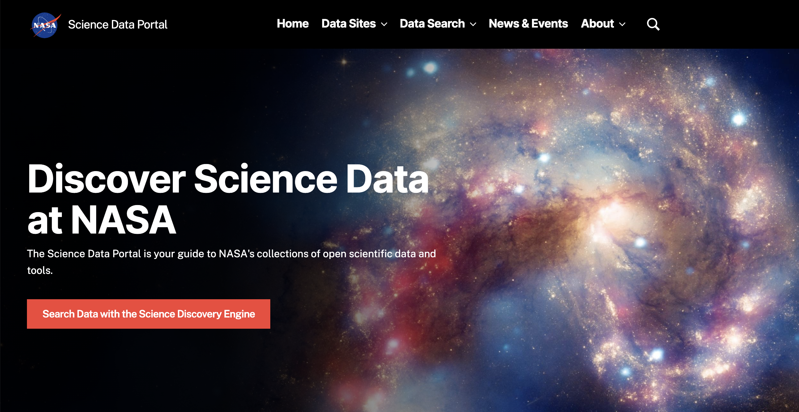

Portfolio
Explore some of the websites and articles I've worked on. For additional information about my work, send me an email.
Websites
NASA's Science Data Portal
The Science Data Portal is a website that directs users to the NASA science data and tools they need. An updated version of the website officially launched in November 2024. My work on the site has included:
- Writing web content for the updated site.
- Testing and giving developers feedback on a new Drupal CMS.
- Building pages according to UI/UX designer's specifications.
- Writing monthly data spotlights for News section.
- Strategizing future additions and expansions to the site.

NASA's Planetary Data Ecosystem
The Planetary Data Ecosystem website, launched in December 2024, helps the planetary science community access data and resources for their research. My work on the site in collaboration with NASA Planetary stakeholders included:
- Creating a website taxonomy.
- Writing and editing copy for the website.
- Building pages according to UI/UX designer's specifications.
- Creating custom HTML components to speed up development process.
![A screenshot of NASA's Planetary Data Ecosystem website hero. The background shows an artist's impression of a rocky exoplanet orbiting a red star. The title says “Planetary Data Ecosystem,” with a subtitle beneath that says “NASA’s Planetary Data Ecosystem (PDE) helps make planetary data, software tools, standards, and resources available to the general public, and supports planetary researchers in discovering more about our solar system and beyond.” Two orange buttons beneath the subtitle say “Find Planetary Data” and “Use Planetary Data.”](images/pde.png)
Article Publications
NASA’s Prithvi Becomes First AI Geospatial Foundation Model In Orbit
NASA Science May 7, 2026A team of researchers demonstrated NASA and IBM’s open-source Prithvi Geospatial AI foundation model aboard two in-orbit platforms.
How Open NASA Data on Comet 3I/ATLAS Will Power Tomorrow’s Discoveries
NASA Science March 20, 2026Data collected by NASA's missions about interstellar comet 3I/ATLAS will continue to reveal insights about the comet and interstellar objects at large.
NASA AI Model That Found 370 Exoplanets Now Digs Into TESS Data
NASA Science January 22, 2026Trained on open data from NASA's exoplanet-hunting missions, the open-source ExoMiner++ deep learning model validates new planets with its advanced algorithm.
Hubble Team Launches New Spectroscopic UV Data Archive
NASA Science Data Portal Nov. 18, 2025The relaunched Hubble Spectroscopic Legacy Archive (HSLA) encompasses all of Hubble’s ultraviolet spectroscopic observations and features an automated pipeline to classify astronomical targets.
How NASA’s SPHEREx Mission Will Share Its All-Sky Map With the World
NASA Science July 2, 2025NASA's newest astrophysics space telescope has begun delivering its sky survey data to a public archive, enabling discoveries in almost every area of astronomy.
How NASA Science Data Defends Earth from Asteroids
NASA Science April 10, 2025NASA collects and shares data about near-Earth objects to identify any asteroids or comets that may pose a threat to Earth.
NASA Open Data Turns Science Into Art
NASA Science Feb. 26, 2025Numerous artists have incorporated NASA science data into their work, further engaging the public in science discovery.
NASA Open Science Reveals Sounds of Space
NASA Science Dec. 18, 2024A team from NASA's Chandra X-ray Observatory converts NASA astronomy data to sound, creating "sonifications" for more accessible science discovery.
Pioneer of Change: America Reyes Wang Makes NASA Space Biology More Open
NASA Science Sept. 26, 2024Meet NASA's Space Biology Biospecimen Sharing Program lead, America Reyes Wang, who facilitates vital space biology research through open science.
NASA and NOAA Collaborate for Greater Science Data Discovery
NASA EarthData Aug. 22, 2024NASA and NOAA have agreed to adopt the same open-source metadata system, which makes it easier for users to find the data they need.
How NASA Citizen Science Fuels Future Exoplanet Research
NASA Science Aug. 8, 2024The upcoming Nancy Grace Roman Space Telescope and Habitable Worlds Observatory will continue the established practice of including the public in exoplanet research.
Mapping the Red Planet with the Power of Open Science
NASA Science June 27, 2024Scientists at NASA’s Jet Propulsion Laboratory used novel mapping techniques to direct the Perseverance Mars rover and the Ingenuity helicopter — and they did it all with open-source tools.
AI for Earth: How NASA’s Artificial Intelligence and Open Science Efforts Combat Climate Change
NASA Science April 18, 2024NASA and IBM Research teamed up to create an AI foundation model trained on Earth satellite data. The resulting tool will supercharge research into climate disasters.